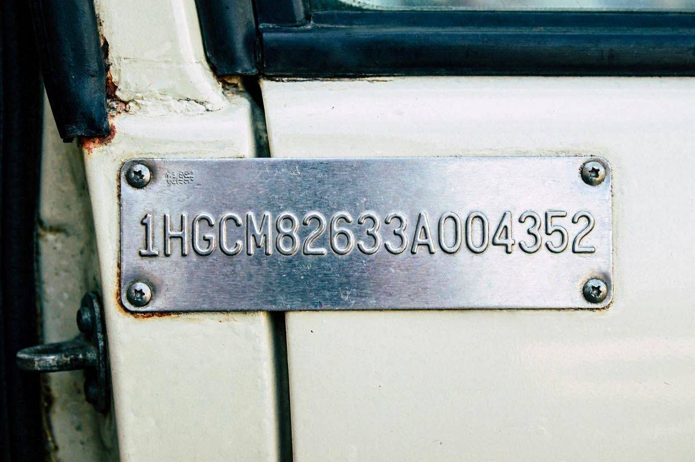
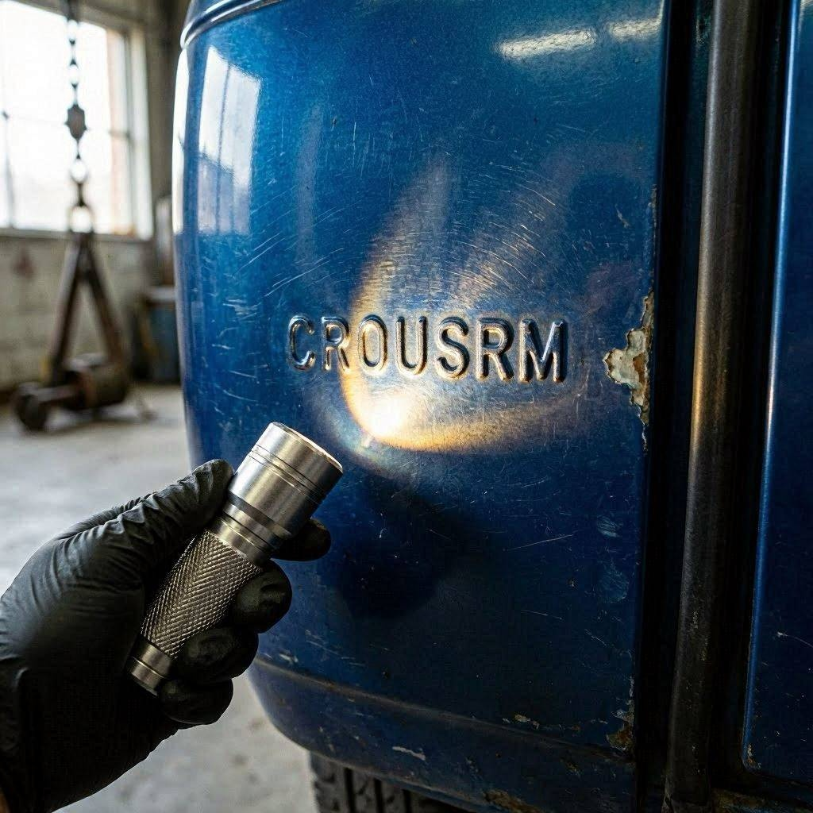
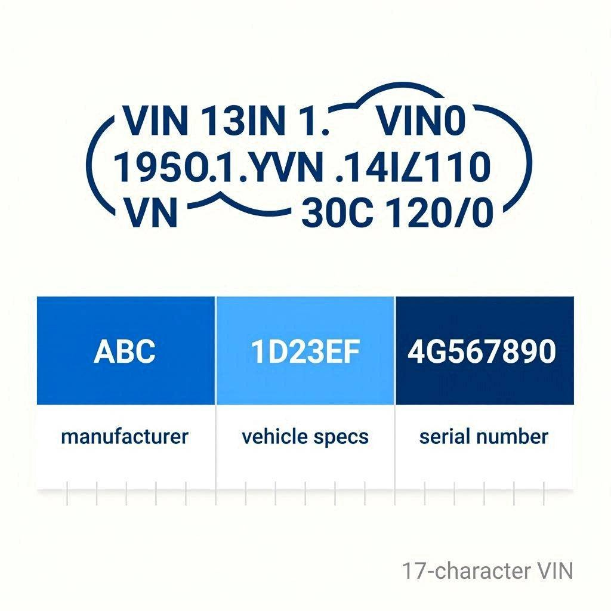

تفسیر کامل کد شاسی (VIN) خودروهای ایرانی — هر عدد یعنی چی

۱۷ کاراکتر که کل شناسنامه خودرو توشه
یه روز یه مشتری بهم زنگ زد. گفت: «یه پژو پارس پیدا کردم، مدل ۹۸، قیمتش عالیه.» گفتم قبل از هر چیزی کد شاسی رو برام بفرست. فرستاد. سه دقیقه بعد بهش گفتم: «این ماشین مدل ۹۸ نیست. مدل ۹۵ـه.» تعجب کرد. گفت از کجا فهمیدی؟ گفتم: از خود ماشین. از کد شاسی یا همون VIN. ماشین دروغ نمیگه — فروشنده شاید.
راستش رو بخواهید، کد شاسی یکی از مظلومترین بخشهای خودروئه. ۹۰ درصد خریدارها حتی نگاهش نمیکنن. در حالی که این ۱۷ کاراکتر، شناسنامه کامل خودروئه: کجا ساخته شده، چه سالی، چه موتوری داره، و حتی اینکه چندمین خودروی خط تولید بوده. توی این مقاله یاد میگیری این کد رو مثل یه کارشناس بخونی.
شماره شاسی کجای خودروئه؟
VIN رو باید از چند جا چک کنی — نه فقط یه جا
اولین قدم اینه که بدونی کجا دنبالش بگردی. توی خودروهای ایرانی معمولاً این جاهاست:
- پلاک شناسایی روی ستون درب راننده (پلاک آبی یا سفید)
- روی سینی جلو، زیر کاپوت (حکشده روی بدنه)
- گوشه پایین شیشه جلو (در خودروهای جدیدتر)
- روی کارت خودرو و سند — که باید با بدنه یکی باشه
- زیر صندلی یا کف اتاق در بعضی مدلها (مثل پراید)
نکته مهم اینجاست: همه این محلها باید یه شماره واحد رو نشون بدن. اگه پلاک ستون درب یه چیز بگه و حکاکی سینی یه چیز دیگه — یا جای حکاکی تازهکاری و جوشکاری شده باشه — با یه خودروی مشکوک طرفی. شاید اتاق تعویض شده. شاید سرقتی باشه.
ساختار ۱۷ کاراکتری VIN — قطعه به قطعه
بیا یه VIN واقعی ایرانی رو با هم باز کنیم. مثلاً این کد یه سمند رو:
این ۱۷ کاراکتر به سه بخش اصلی تقسیم میشه. مثل کد ملی که هر بخشش یه معنی داره:
| بخش | کاراکترها | اسم فنی | چی رو نشون میده |
|---|---|---|---|
| ۱ تا ۳ | IRF | WMI | کشور و کارخانه سازنده |
| ۴ تا ۹ | C951V2 | VDS | مشخصات فنی: مدل، موتور، بدنه |
| ۱۰ تا ۱۷ | GJ123456 | VIS | سال تولید، کارخانه، شماره سریال |
بخش اول — WMI: شناسه سازنده (کاراکتر ۱ تا ۳)
سه کاراکتر اول میگه خودرو کجا و توسط کی ساخته شده. کدهای رایج بازار ایران رو حفظ کن — یا حداقل این جدول رو سیو کن:
| کد WMI | سازنده |
|---|---|
| IRF | ایرانخودرو (سمند، پژو، دنا، رانا) |
| IRH / IRP | سایپا و پارسخودرو (پراید، تیبا، کوییک، شاهین) |
| NAA | ایرانخودرو — کدهای قدیمیتر |
| NAS | سایپا — کدهای قدیمیتر |
| NAP | پارسخودرو قدیمی |
| LSJ / LDC و کدهای L | خودروهای چینی (چری، جک، امویام و...) |
در واقع همین سه حرف اول کلی حرف داره. مثلاً اگه فروشنده میگه «این مونتاژ ایرانه» ولی VIN با L شروع میشه، یعنی خودرو کامل از چین وارد شده — نه مونتاژ داخل. همین یه قلم میتونه چند ده میلیون روی قیمت اثر بذاره.
بخش دوم — VDS: مشخصات خودرو (کاراکتر ۴ تا ۹)
این شش کاراکتر کد فنی مدله: نوع بدنه، نوع موتور، و پلتفرم. هر سازنده کدگذاری خودش رو داره. مثلاً توی محصولات ایرانخودرو، این بخش مشخص میکنه خودرو سمند LX هست یا EF7، پژو پارس سادهست یا TU5. این همون جاییه که میفهمی موتور واقعاً همونیه که فروشنده ادعا میکنه.
باور کنید یا نه، من بارها دیدم پژو پارس «TU5» فروخته میشه در حالی که VIN میگه موتورش XU7 معمولیه. اختلاف قیمت این دو تا؟ گاهی بالای ۱۰۰ میلیون تومن. یه نگاه به کد شاسی، جلوی این کلاه رو میگیره.
بخش سوم — VIS: سال، کارخانه و سریال (کاراکتر ۱۰ تا ۱۷)
مهمترین کاراکتر برای خریدار، کاراکتر دهمـه: سال تولید. این حرف یا عدد بر اساس یه جدول استاندارد جهانی تعیین میشه:
| کاراکتر دهم | سال میلادی | حدود سال شمسی |
|---|---|---|
| F | 2015 | ۱۳۹۳-۹۴ |
| G | 2016 | ۱۳۹۴-۹۵ |
| H | 2017 | ۱۳۹۵-۹۶ |
| J | 2018 | ۱۳۹۶-۹۷ |
| K | 2019 | ۱۳۹۷-۹۸ |
| L | 2020 | ۱۳۹۸-۹۹ |
| M | 2021 | ۱۳۹۹-۱۴۰۰ |
| N | 2022 | ۱۴۰۰-۰۱ |
| P | 2023 | ۱۴۰۱-۰۲ |
| R | 2024 | ۱۴۰۲-۰۳ |
| S | 2025 | ۱۴۰۳-۰۴ |
یادت باشه حروف I، O و Q هیچوقت توی VIN استفاده نمیشن — چون با ۱ و ۰ اشتباه میشن. اگه توی کد شاسی یکی از اینا رو دیدی، یا اشتباه خوندی یا کد جعلیه.
و اون داستان اول مقاله؟ همینجوری فهمیدم. فروشنده میگفت مدل ۹۸، ولی کاراکتر دهم VIN حرف G بود — یعنی تولید ۲۰۱۶، حدود ۹۵. سه سال اختلاف. یعنی حدود ۸۰ میلیون تومن اختلاف قیمت اون روز بازار.
دستکاری VIN — چطور بفهمیم؟

اصالت شماره شاسی = اصالت کل خودرو
خودروهای سرقتی یا اوراقیهای دوبله، معمولاً با شماره شاسی دستکاریشده وارد بازار میشن. این چیزهاییه که من موقع کارشناسی چک میکنم:
- یکدست بودن حکاکی — عمق و فاصله حروف باید یکنواخت باشه
- نبودن آثار سنگزنی یا صافکاری دور محل حکاکی
- تطابق پلاک ستون درب با حکاکی روی بدنه
- تطابق VIN بدنه با کارت خودرو و سند
- سالم بودن پرچهای پلاک شناسایی — پرچ نو یعنی پلاک باز شده
- تطابق سال تولید VIN با ظاهر و فرسودگی واقعی خودرو
یه بار مشتری داشتم — آقای کریمی، راننده اسنپ — که یه پراید ارزون پیدا کرده بود. ۲۰ میلیون زیر قیمت بازار. رفتم بالای سرش. پلاک شناسایی ستون درب نو بود، ولی پرچهاش رنگپریده و خطخطی. حکاکی سینی هم دورش تازه رنگ شده بود. بهش گفتم: این ماشین رو نخر. دو هفته بعد شنیدیم همون خودرو توی یه معامله دیگه توسط پلیس توقیف شد — اتاقش مال یه خودروی سرقتی بود. اون ۲۰ میلیون تخفیف، قیمت دردسر بود، نه فرصت.
با VIN چه استعلامهایی میشه گرفت؟
کد شاسی فقط برای خوندن مشخصات نیست. باهاش این کارها رو هم میتونی بکنی:
- استعلام اصالت خودرو در دفاتر پلیس +۱۰
- استعلام سوابق بیمه شخص ثالث و تخفیفها از سامانه بیمه مرکزی
- پیگیری سوابق خدمات در نمایندگیهای سازنده (ایساکو، امداد سایپا)
- چک کردن فراخوانهای کارخانه (ریکال) برای رفع ایراد رایگان
- تشخیص دقیق قطعه یدکی سازگار موقع خرید لوازم
مورد آخر رو دست کم نگیر. خیلی وقتها لوازمفروش برای اینکه قطعه دقیق مدلت رو بده، VIN رو ازت میخواد — مخصوصاً برای خودروهای چینی که هر سالشون یه تغییر داره. عکس پلاک VIN رو توی گوشیت داشته باش. کارت راه میندازه.
جمعبندی — ۱۷ کاراکتری که میلیونها میارزه

سه حرف اول: سازنده · کاراکتر دهم: سال تولید · هشت رقم آخر: سریال
دفعه بعد که رفتی خودرو ببینی، قبل از اینکه سوار شی، برو سراغ ستون درب راننده. سه حرف اول رو بخون — سازنده رو میگه. کاراکتر دهم رو پیدا کن — سال واقعی تولید رو میگه. محل حکاکی رو نگاه کن — اصالت رو میگه. همین سه تا حرکت ساده، تو رو از ۹۰ درصد خریدارها جلوتر میذاره.
در واقع VIN مثل آزمایش DNA خودروئه. ظاهر رو میشه آرایش کرد، کیلومتر رو میشه دستکاری کرد، ولی این ۱۷ کاراکتر سختترین چیز برای جعله. یاد بگیر بخونیش — یا کسی رو بیار که بلده. برای مطالب بیشتر مثل تشخیص کیلومتر واقعی و رنگشدگی، سری به بلاگ کارماچک بزن.
سوالات متداول
شماره شاسی و شماره موتور فرقشون چیه؟
شماره شاسی (VIN) شناسه کل خودروئه و روی بدنه حک شده؛ شماره موتور فقط مال موتوره و روی بلوک موتور حکه. موقع معامله هر دو باید با سند تطبیق داده بشن. تعویض موتور با مجوز قانونیه ولی باید توی سند ثبت شده باشه.
از روی VIN میشه فهمید خودرو تصادفی بوده یا نه؟
مستقیم نه — VIN تاریخچه تصادف رو ذخیره نمیکنه. ولی با VIN میتونی سوابق بیمه و خسارتهای پرداختی رو از بیمه مرکزی استعلام بگیری که تا حد خوبی تصادفات ثبتشده رو نشون میده. برای تصادفات ثبتنشده فقط کارشناسی فنی بدنه جواب میده.
اگه VIN روی بدنه با سند فرق داشت چیکار کنم؟
معامله رو همون لحظه متوقف کن. حتی یه کاراکتر اختلاف یعنی یا سند مال این خودرو نیست یا شاسی دستکاری شده. هیچ توجیهی از طرف فروشنده رو قبول نکن — این مورد قابل چشمپوشی نیست.
چرا بعضی VIN های ایرانی با NAA شروع میشن و بعضی با IRF؟
هر دو مال ایرانخودروئه — کدهای WMI در طول زمان و بر اساس استاندارد ثبت جهانی تغییر کردن. خودروهای قدیمیتر معمولاً NAA دارن و جدیدترها IRF. هر دو معتبرن، فقط دوره تولید رو نشون میدن.
کاراکتر دهم VIN خودروی من عدده نه حرف — یعنی چی؟
اعداد ۱ تا ۹ هم توی چرخه سال تولید استفاده میشن (مثلاً ۱ یعنی ۲۰۰۱ یا ۲۰۳۱). چون چرخه هر ۳۰ سال تکرار میشه، سال دقیق رو با توجه به نسل خودرو تشخیص بده — یه پراید با کاراکتر دهم «۵» قطعاً ۲۰۰۵ـه نه ۲۰۳۵.
استعلام VIN چقدر هزینه داره؟
استعلام اصالت در دفاتر پلیس +۱۰ هزینهش جزئیه (در حد چند ده هزار تومان). استعلام سوابق بیمه رایگانه. کارشناسی کامل اصالت بدنه هم نسبت به ریسکی که پوشش میده خیلی ناچیزه — برای جزئیات با کارماچک تماس بگیر.